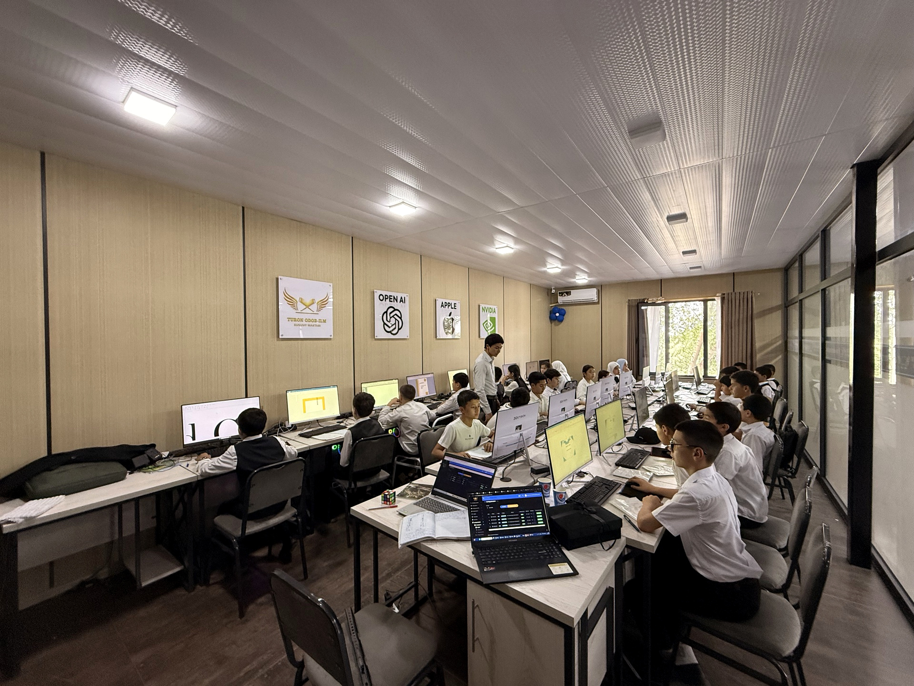
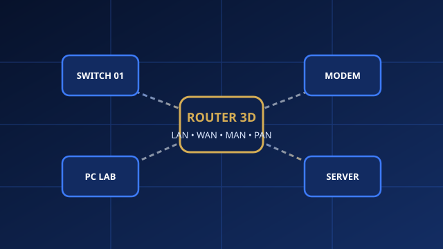
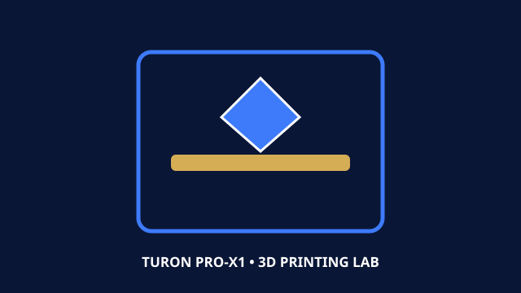
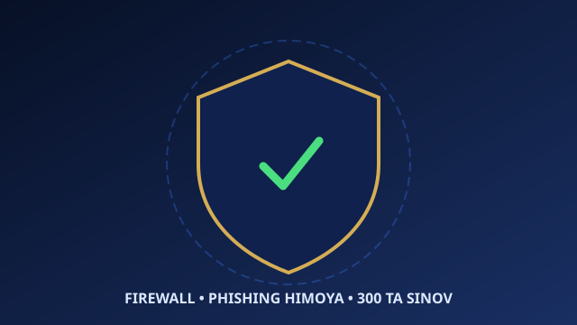
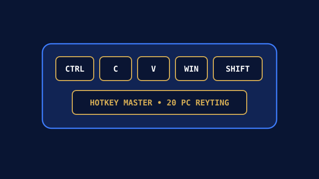
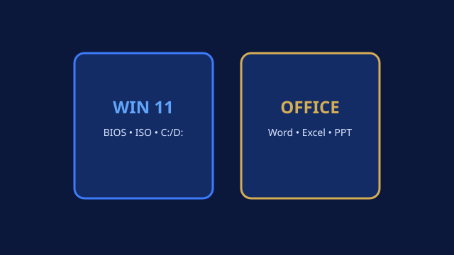
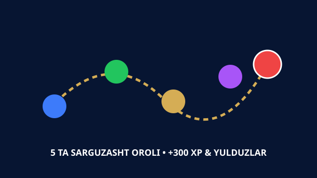

IT va dasturlash laboratoriyasi
Kompyuter savodxonligi va dasturlash amaliyoti

IT va dasturlash fani o‘qituvchisi • IT WORLD muallifi
Turon Odob-Ilm maktabining yetakchi IT ustozi va o‘quvchilar uchun maxsus yaratilgan IT WORLD (aliyev-turon.netlify.app) interaktiv 3D o‘yin-ta’lim platformasi muallifi. Bolalarga kompyuter savodxonligi, 3D qurilmalar yig‘ish, tarmoqlar, kiberxavfsizlik, HTML/CSS/Python dasturlash va sun’iy intellektni zamonaviy o‘yin metodikasi orqali o‘rgatadi.
“Bola kompyuter va dasturlashni quruq yodlash bilan emas, balki qiziqarli 3D o‘yin, amaliy tajriba va kashfiyot orqali sevib o‘rgansagina haqiqiy natijaga erishadi.”

IT ustozimiz Aliyev Og‘abek darslarda IT WORLD platformasi yordamida har bir mavzuni amaliy missiyaga aylantiradi:
Kompyuter xonasida o‘quvchilar real operatsion tizimlar va Sun’iy intellekt vositalari bilan amaliy ishlamoqdalar.
Kompyuter savodxonligi va dasturlash amaliyoti
Zamonaviy kompyuter xonasida amaliy dars va daftar bilan ishlash
O‘quvchilar Sun’iy intellekt va operatsion tizimlar bo‘yicha topshiriq bajarmoqda
Biznes, davlat xizmati, ilm-fan yoki tibbiyot — har bir zamonaviy kasbda IT va Sun’iy intellekt eng kuchli tayanchdir.
“Assalomu alaykum! Mana IT’dan yaxshi o‘qiganim uchun biznesmen bo‘ldim. Ota-onamga rahmat!”
Zamonaviy tadbirkorlik, raqamli tahlil va IT loyihalarni boshqarish orqali kelajakda o‘z biznesini yaratish osonlashadi.
“Assalomu alaykum! Mana IT’dan yaxshi o‘qiganim uchun ichki ishlarda ishlayapman.”
Axborot xavfsizligi, raqamli tizimlar va kiberhimoya bilimlari huquq-tartibot hamda davlat xizmatida katta ustunlik beradi.
“Assalomu alaykum! Mana IT’dan yaxshi o‘qiganim uchun olim bo‘ldim.”
Fizika, kimyo, biologiya va matematika fanlarini IT hamda Sun’iy intellekt bilan birlashtirib ilmiy kashfiyotlar qilish oson.
“Assalomu alaykum! Mana IT’dan yaxshi o‘qiganim uchun stomatolog bo‘ldim. Ota-onamga rahmat!”
Bugungi tibbiyot 3D diagnostika, raqamli tasvir va AI tahlilisiz ishlamaydi — IT bilgan shifokor zamon bilan hamnafas bo‘ladi.
Har bir kartani bosib, tegishli o‘quv o‘yini yoki 3D simulyatorni to‘g‘ridan-to‘g‘ri ishga tushiring.

Haqiqiy Turon Odob-Ilm maktabi binosi, hovlisi, avtobusi va 2 qavatli 8 ta IT laboratoriya bo‘ylab 360° sayohat, ustozlar va interaktiv topshiriqlar.
O‘yinni boshlash ↗O‘quvchilar protsessor (CPU), RAM, SSD, quvvat bloki va kabellarni 3D korpusga qo‘lda joylab, kompyuterni yoqish va nosozliklarni topishni amalda o‘rganishadi.
O‘yinni boshlash ↗
Kompyuter xonasida 360° harakatlanib, kabel tortish, tarmoq qurilmalarini ulash (10 bosqich) hamda buzilgan tarmoqlarni tuzatish (10 bosqich).
O‘yinni boshlash ↗
Futuristik 3D bosib chiqarish laboratoriyasi: 3D CAD Studio, printer qismlarini qo‘lda yig‘ish va PLA/PETG/ABS qatlamma-qatlam chop etish.
O‘yinni boshlash ↗
Blokli dasturlashdan tortib soyali kod ustidan HTML/CSS yozib shaxsiy sayt yaratish va Python topshiriqlarini yechish metodikasi.
O‘yinni boshlash ↗
Kuchli parol yaratish, firibgar (phishing) havolalarni ajratish, Firewall, SQLi va XSS himoyasini o‘yin shaklida o‘zlashtirish.
O‘yinni boshlash ↗
Sun’iy intellekt qanday ishlashini amalda sinab ko‘rish, ma’lumotlarni tasniflash va AI’ga to‘g‘ri savol (prompt) berish mashqlari.
O‘yinni boshlash ↗
Interaktiv klaviatura, Ctrl+C/Win+D/F5 kabi tezkor tugmalar, sichqoncha chaqqonligi (Mouse Master 3D) va sinf ichidagi jonli musobaqa.
O‘yinni boshlash ↗
Operatsion tizimni 0 dan o‘rnatish (BIOS, disk bo‘lish, drayverlar) va ofis dasturlarida hujjat, jadval hamda taqdimot yaratish.
O‘yinni boshlash ↗
Bolalarni rag‘batlantiruvchi XP ballari, tangalar va 5 ta sarguzasht oroli orqali kompyuter tarixidan tortib algoritmlargacha qadam-baqadam o‘rgatish.
O‘yinni boshlash ↗Mavzular: Klaviatura madaniyati, fayl tizimi, xavfsiz internet, mantiqiy o‘yinlar
Boshlang‘ich sinf o‘quvchilarida texnologiyalardan to‘g‘ri va ongli foydalanish ko‘nikmasini shakllantirish.
Mavzular: Algoritmlar, Scratch, interaktiv animatsiyalar, mantiqiy masalalar
Murakkab muammolarni qadamlarga bo‘lish, vizual dasturlash orqali ijodiy loyihalar yaratish.
Mavzular: HTML5, CSS3, Python asoslari, amaliy laboratoriya mashg‘ulotlari
Katta sinf o‘quvchilarini zamonaviy IT kasblariga tayyorlovchi majburiy va chuqurlashtirilgan amaliy darslar.
Turon Odob-Ilm IT ustozi Aliyev Og‘abek tomonidan yaratilgan maxsus ta’lim-o‘yin platformasi: 3D Maktab dunyosi, PC Builder 3D, 3D Tarmoq Akademiyasi, 3D Printing Lab, Web Studio (100 bosqich), Kiber Qalqon 3D va 20 kompyuterli sinf reytingi.
Loyihani ko‘rish ↗O‘quvchilar zamonaviy kompyuter xonasida ustoz nazoratida algoritmik mashqlar va amaliy topshiriqlarni bajarishmoqda. Individual o‘quvchi loyihalari ota-ona roziligi tasdiqlangach muallifi bilan qo‘shiladi.
Loyihani ko‘rish ↗